教程笔记 · Part 1
OS 概述 · 处理器管理 · 存储管理（前段）。
整理者：Claude 子代理 覆盖：第一章 计算机操作系统概述 + 第二章 处理器管理 + 第三章 存储管理（前段） 风格：原书概念定义 + 关键例题 + 自己理解 注：本笔记面向零基础学习者，每个抽象概念前先放日常类比再上技术定义
第一章 计算机操作系统概述
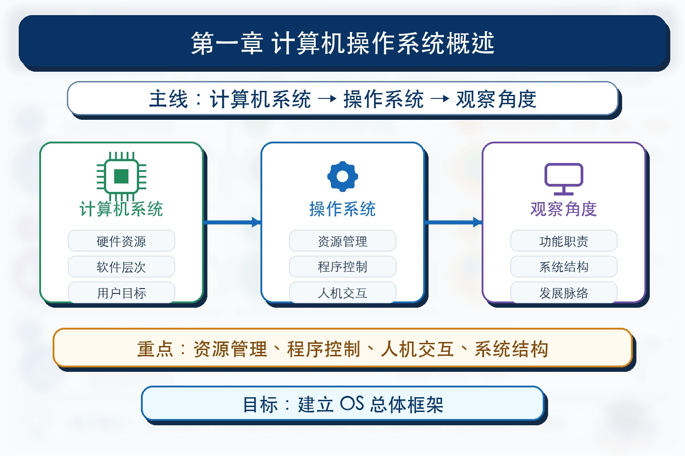
引入：什么是操作系统
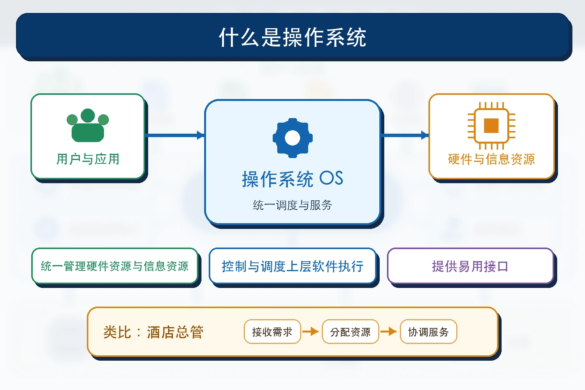
原书定义：操作系统（operating system, OS）是计算机系统中最重要的系统软件，它统一管理计算机系统的硬件资源与信息资源，控制与调度上层软件的执行并为其提供易于使用的接口。
日常类比：操作系统好比一个酒店总管。客人（应用程序）来住店，不会直接去找清洁工、厨师、电工沟通，全部通过总管登记、调度。总管的两个职责：①管理资源（房间、餐食、热水）②对外提供易用的服务接口（前台办理）。
1.1 计算机系统
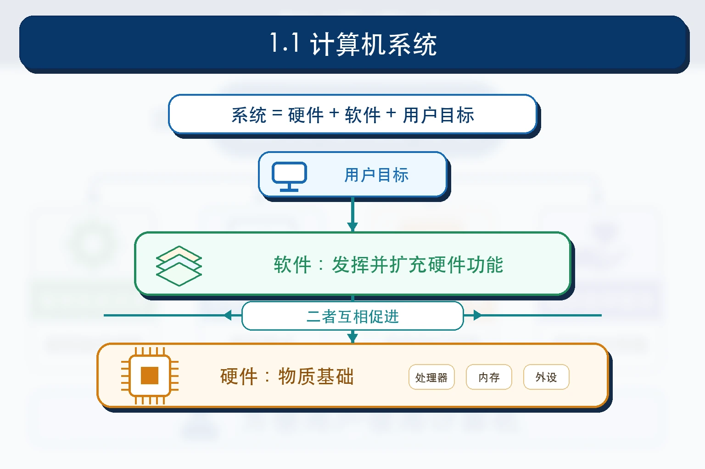
1.1.1 计算机系统概述
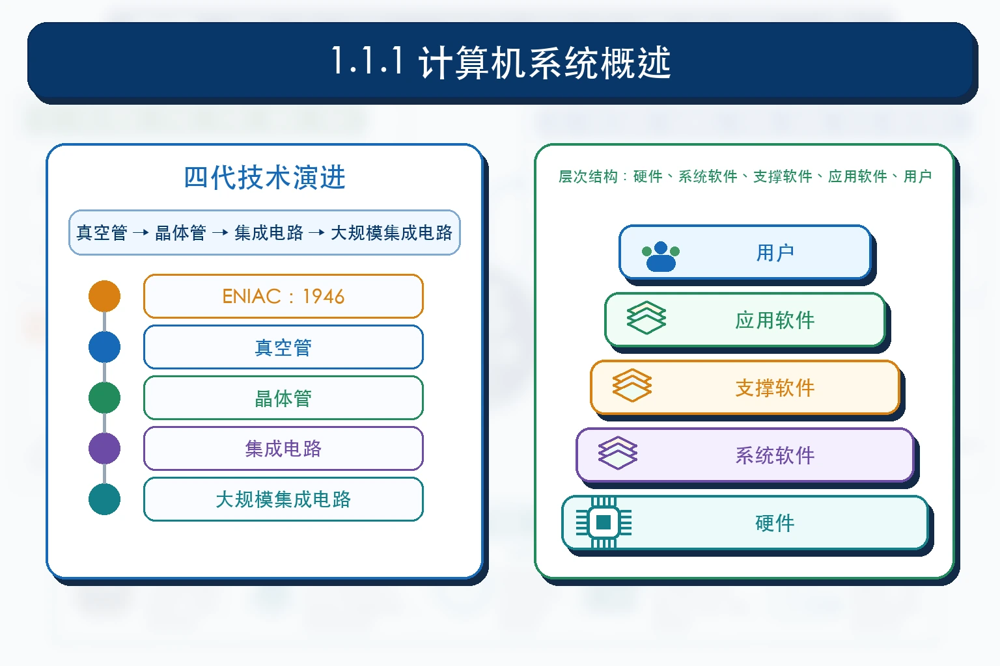
电子数字计算机：一种能够自行按照已设定的程序进行数据处理的电子设备，是软件与硬件相结合的、面向系统的、侧重于应用的自动化求解工具。1946 年首台电子数字计算机 ENIAC 诞生于美国。
计算机技术的发展四阶段：
| 代次 | 时期 | 主要器件 | 关键特征 |
|---|---|---|---|
| 第一代 | 1946-1957 | 电子真空管 | 速度慢、存储量小、体积大；尚无 OS；手工操作（卡片/纸带 + 控制台按钮）；单道串行 |
| 第二代 | 1958-1964 | 晶体管 | 体积小、寿命长、功耗低；I/O 例行程序、早期高级语言（FORTRAN/COBOL）、早期批处理控制系统、磁带文件系统出现 |
| 第三代 | 1965-1977 | 集成电路（每片 4-100 逻辑门） | 多道程序设计成为缓解 I/O-CPU 速度矛盾的主流手段；磁盘出现；OS 日臻成熟 |
| 第四代 | 1978-至今 | 大规模/超大规模集成电路（每片 1000+ 逻辑门） | 微机化、网络化、智能化；2000 年后移动计算兴起 |
计算机系统的组成：硬件 + 软件。硬件是软件运行的物质基础，软件能够充分发挥硬件潜能并扩充硬件功能。两者互相促进，缺一不可。
计算机系统的层次结构（图 1-1）：从底向上依次是 - 计算机硬件 - 系统软件层（操作系统、实用程序、语言处理程序、数据库管理系统） - 支撑软件层（接口软件、工具软件、环境数据库） - 应用软件层（财务系统、航空订票、上网浏览、电子商务、科学计算 ……） - 用户
每层都向外提供一组接口，对内隐藏实现细节，对层外只提供使用约定。
对应学校 ch1
1.1.2 计算机硬件系统
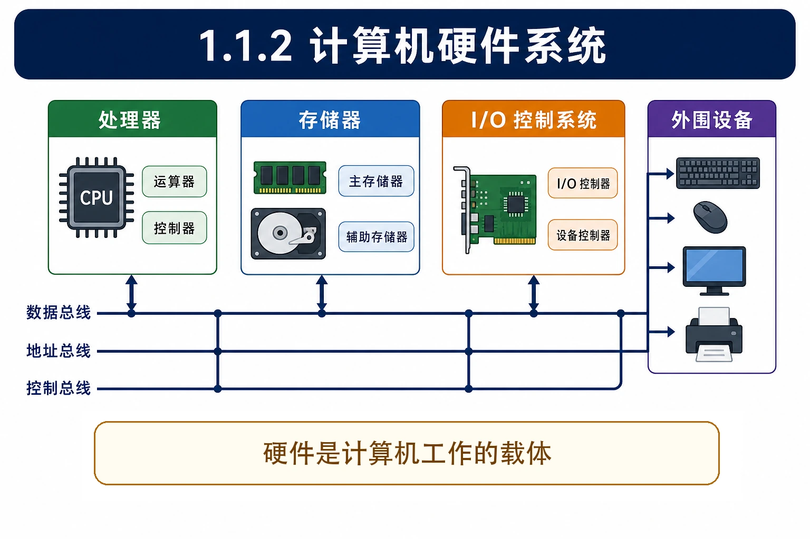
计算机硬件系统是借助电、磁、光、机械等原理构造的各种物理部件的有机结合，是计算机系统工作的载体，包括：处理器、存储器、I/O 控制系统及外围设备。
1.1.3 计算机软件系统
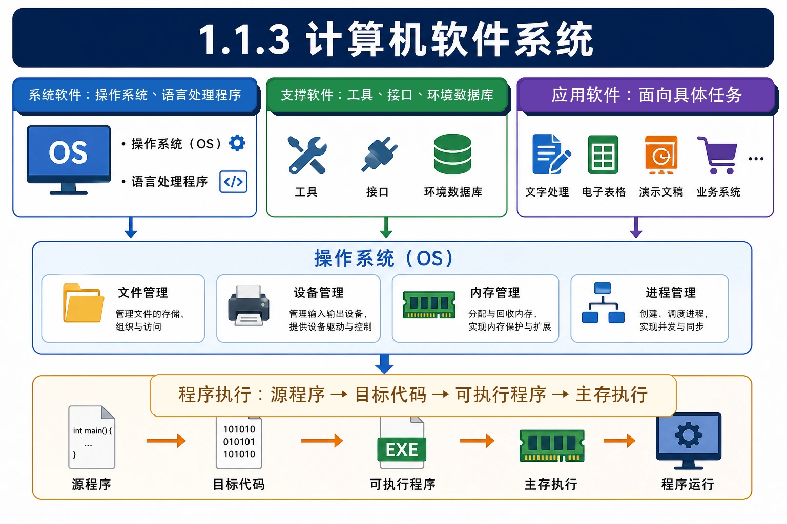
计算机软件系统包括各类程序和文件，用于指挥计算机系统按指定要求进行协同工作，包括系统软件、支撑软件和应用软件，其中最关键的系统软件是操作系统和语言处理程序。
计算机程序的解释执行过程（图 1-7）：源程序（高级语言/汇编）→ 编译/汇编/解释 → 目标代码 → 链接 → 可执行程序 → 装入 → 主存执行程序 → 由操作系统（文件管理、设备管理、内存管理、进程管理）支撑执行。
对应学校 ch1
1.2 计算机操作系统
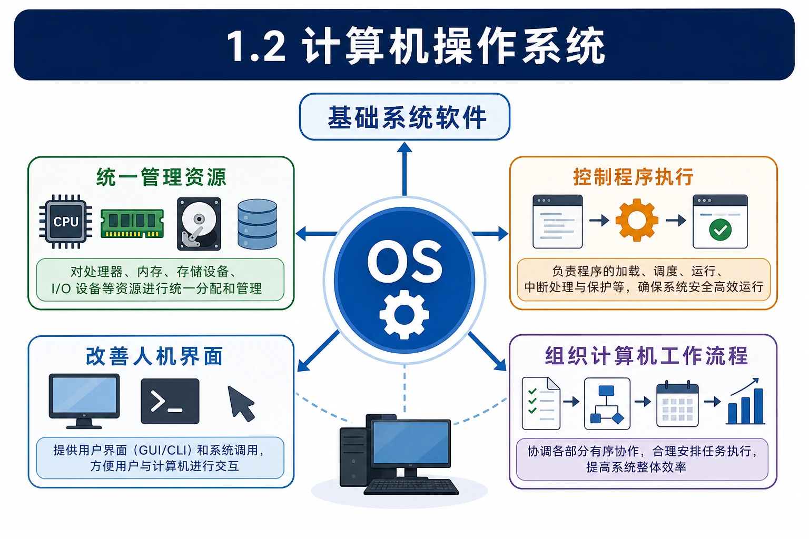
1.2.1 计算机操作系统技术的发展
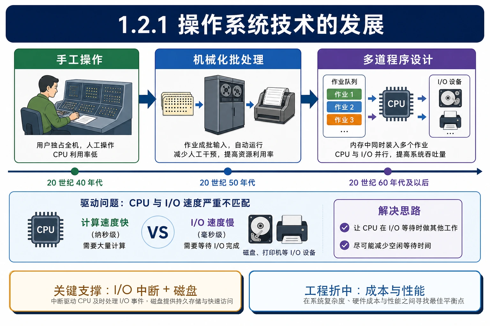
手工操作阶段（第一代计算机）：用户用开关、按钮、亮灯直接控制计算机。
类比：早期洗衣机操作就是”开关表示、按钮控制、亮灯显示”，OS 雏形。
机械化批处理阶段（第二代计算机）：操作员把多道作业组织成”作业说明书 + 程序数据”，排队执行。压缩了手工操作时间，但 I/O 与 CPU 的速度矛盾仍存在。
多道程序设计的诞生（第三代计算机起）：为解决 I/O 机械慢与 CPU 电子快的矛盾，让多道程序同时进入主存，使外设和 CPU 充分并行。 - 关键技术支撑：I/O 中断（已使两者具备并行能力）+ 磁盘（解决多道程序换入换出的代价） - 1960 年磁盘出现使多道程序执行成为可能，操作系统正式诞生
核心思想：OS 设计是一个工程问题——必须考虑成本、性能折中，不是单纯的哲学/数学问题。
对应学校 ch1
1.2.2 操作系统及其分类
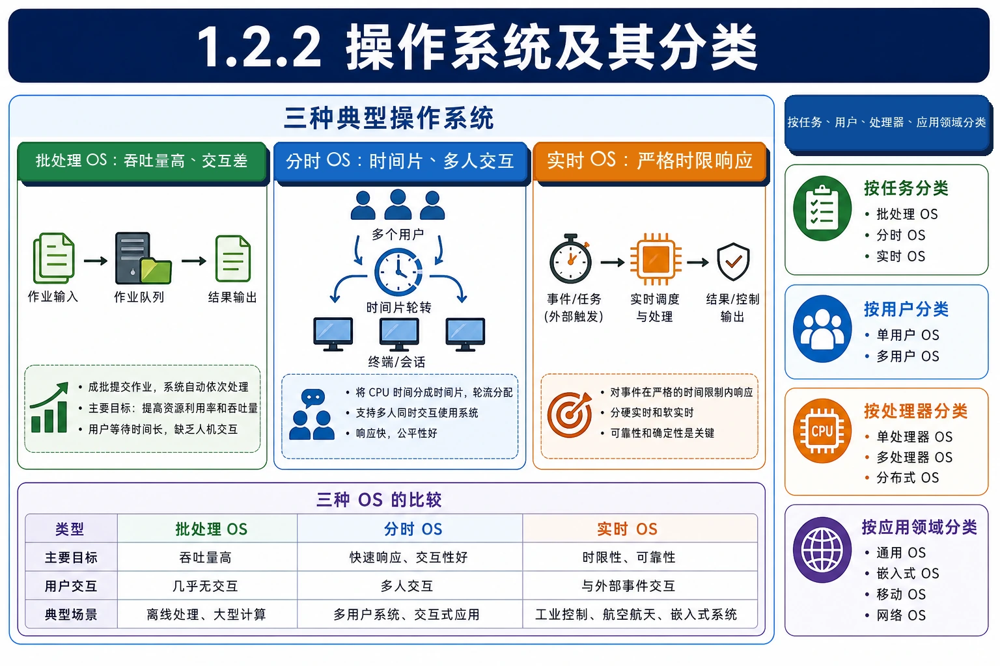
操作系统定义（再次强调）：计算机系统中最基础的系统软件，统一管理软硬件资源，控制程序执行，改善人机界面，合理组织计算机工作流程，为用户使用计算机提供良好的运行环境。
操作系统的核心地位： - 把硬件裸机改造成完善的虚拟机 - 提供多道程序设计环境 - 隔离应用与硬件，向上提供更多更强的功能支持 - 是软件系统的核心，与硬件一起构成软件的基础运行平台
操作系统的分类：
| 分类原则 | 类型 |
|---|---|
| 设计目标 | 批处理 OS、分时 OS、实时 OS |
| 处理方式 | 单处理器 OS、多处理器 OS |
| 用户和任务 | 单/多任务 OS、单/多用户 OS |
| 应用领域 | 服务器 OS、并行 OS、网络 OS、分布式 OS、微机 OS、手机 OS、嵌入式 OS、传感器 OS |
三大经典 OS 对比：
- 批处理 OS：作业 = 程序 + 数据 + 作业说明书。预先排入作业队列，自动连续处理。优点：资源利用率高、吞吐量大、用户脱机工作；缺点：周转时间长、无交互、不利调试。代表：UNIX 的 Shell、Windows 的 .bat 仍保留批处理痕迹。
- 分时 OS：多个联机用户同时使用，每人一个终端，用问答方式控制。CPU 时间片轮流分配。最常用。
- 实时 OS：要求计算机在严格时限内响应外部事件。
对应学校 ch1
1.3 深入观察操作系统
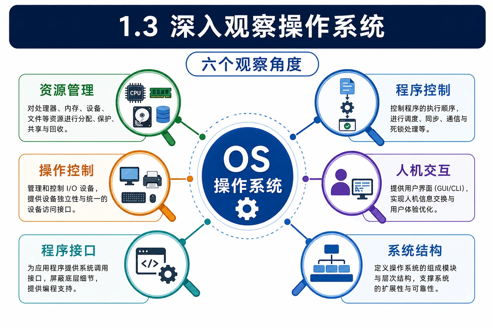
教材通过 6 个角度刻画 OS：资源管理、程序控制、操作控制、人机交互、程序接口、系统结构。
1.3.1 资源管理的角度
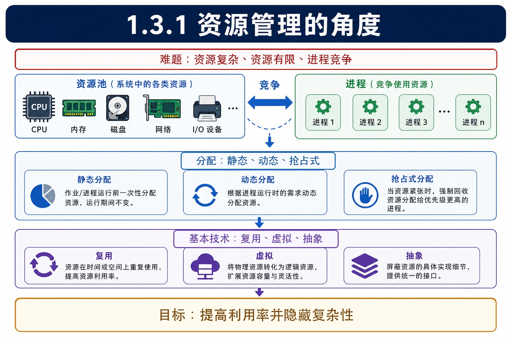
OS 面对的难题： 1. 物理资源在硬件实现上的复杂性 → 用户几乎不可能直接使用，需 OS 提供机制封装细节 2. 物理资源有限而竞争资源的应用进程众多 → 必须解决资源数量不足和如何合理分配两个问题
资源分配的三种方式： - 静态分配：进程运行前一次性拿到全部独占资源。资源利用率低 - 动态分配：使用资源前临时申请。可能因资源竞争产生死锁 - 资源抢占式分配：可剥夺正在使用的资源。被抢的进程需要执行回退，实现代价大
资源管理三大基本技术：复用、虚拟、抽象。
- 复用技术：创建虚拟资源以解决物理资源数量不足的问题
- 空分复用共享：把空间分给多个用户（如内存分区）
- 时分复用共享：把时间片轮流给多个用户（如 CPU 时间片）
- 虚拟技术：把物理资源转变成逻辑上的资源，让用户看到比实际多的资源（如虚存）
- 抽象技术：屏蔽物理细节，提供统一接口（如用统一的”文件”接口隐藏磁盘扇区差异）
对应学校 ch1
1.3.2 程序控制的角度
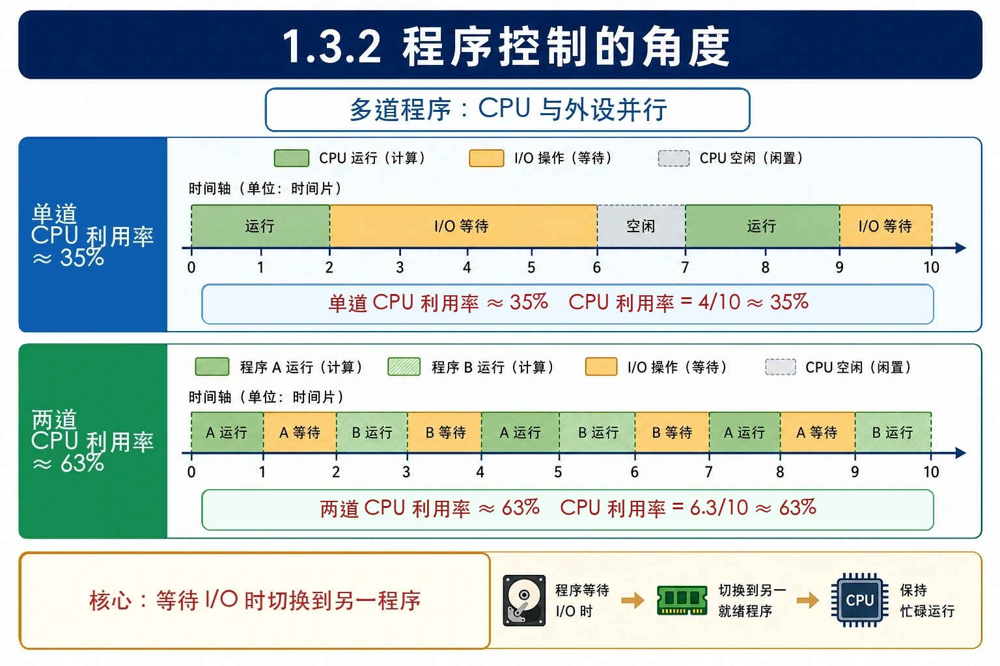
多道程序的运行特征： 1. I/O 慢而 CPU 快，程序执行 I/O 时不需占用 CPU 2. 多硬件部件可并行工作
关键例题：CPU 利用率（图 1-8 例）
某数据问题：从输入机输入 78 ms，CPU 计算 52 ms，结果存磁盘 20 ms，循环至处理完毕。
-
单道（CPU 与外设无并行）： CPU 利用率 = 52 / (78 + 52 + 20) ≈ 35% 原因：I/O 期间 CPU 一直空闲。
-
两道程序同时进入主存（程序 1：输入 78ms + 计算 52 ms + 磁带写 20 ms；程序 2：磁带读 20 ms + 计算 42 ms + 打印 88 ms）： CPU 利用率 = (52 + 42) / 150 ≈ 63%
显然多道程序并行执行的 CPU 利用率比单道串行高。原因：当某程序因故不能继续运行时，系统会把 CPU 分配给另一个程序运行，使 CPU 和设备都尽量处于忙碌状态。这就是采用多道程序设计技术的原因。
对应学校 ch1
1.3.3 操作控制计算机的角度
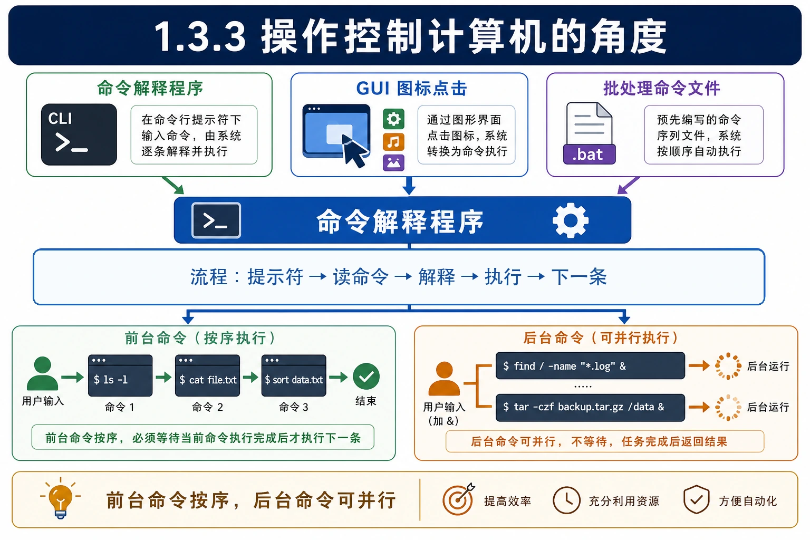
操作员操作控制计算机的方式： - 命令解释程序（命令行/会话语言，UNIX Shell 是典型） - GUI 图标点击 - 批处理命令文件
命令解释程序的处理流程： 1. OS 启动命令解释程序，输出命令提示符，等待用户输入 2. 中断事件发生 → 从命令缓冲区读入命令 → 解释分析 → 执行处理代码 3. 处理完毕接收下一条
前台命令 vs 后台命令：前台命令必须严格按序执行；后台命令启动后无论是否结束 OS 都可继续接受下一条。
1.3.4 人机交互的角度
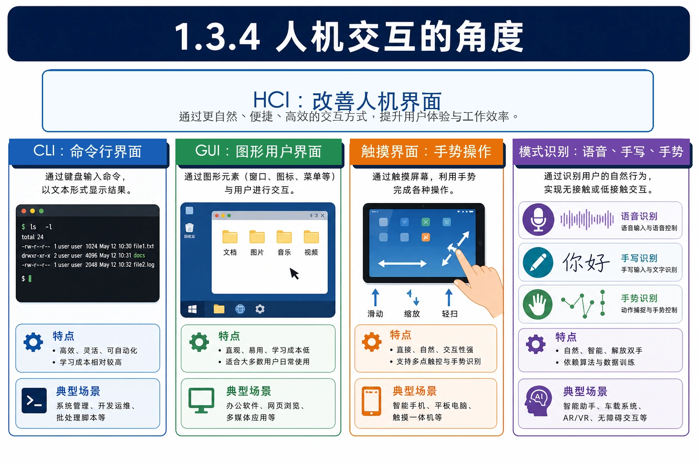
人机交互（HCI） 用于改善人机界面，决定计算机系统的友善性，是当今 OS 研发的主要热点之一。
OS 用户界面（UI）的 4 类： 1. 命令行界面（CLI）：键盘输入命令文本 2. 图形用户界面（GUI）：鼠标点击图标/按钮，应用以”窗口”运行 3. 触摸界面：手势操作（移动设备） 4. 模式识别界面：语音/手写/手势
1.3.5 程序接口的角度
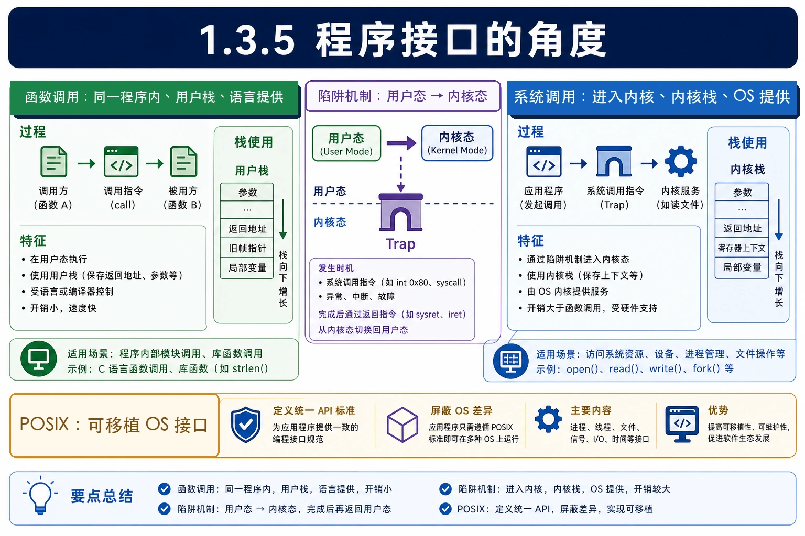
系统调用 vs 函数调用（重要对比）：
| 比较点 | 函数调用 | 系统调用 |
|---|---|---|
| 调用方式 | 静态调用，与调用者同一程序内 | 动态调用，服务例程位于 OS 中 |
| 运行栈 | 用户栈 | 内核栈（需经陷阱机制从用户态转内核态） |
| 提供方 | 编程语言 | 操作系统 |
| 升级影响 | 需重新编译链接 | 升级修改与调用程序无关 |
| 数量类型 | 不同语言可不同 | 一旦设计好就固定不变 |
POSIX 标准：IEEE 定义的可移植 OS 接口，规定 OS 必须提供的 API。UNIX/Linux 遵循 POSIX，是 POSIX 兼容操作系统。POSIX 仅规定 API 不规定实现方式。
对应学校 ch1
1.3.6 系统结构的角度
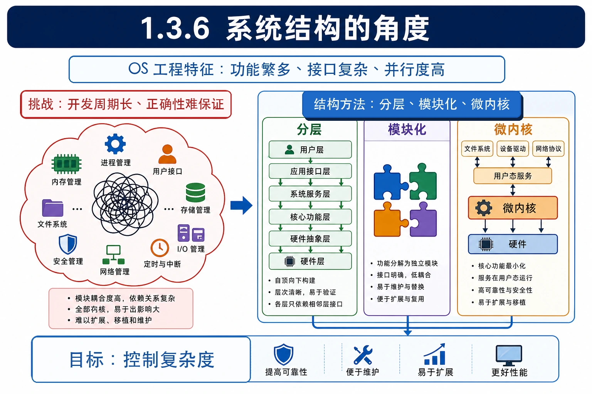
OS 的工程特征： - 复杂程度高（功能繁多、接口复杂、并行度高） - 开发周期长（难以控制） - 正确性难以保证（可靠性问题突出）
OS 通常采用分层、模块化、微内核等结构来管理复杂度。
对应学校 ch1
第二章 处理器管理
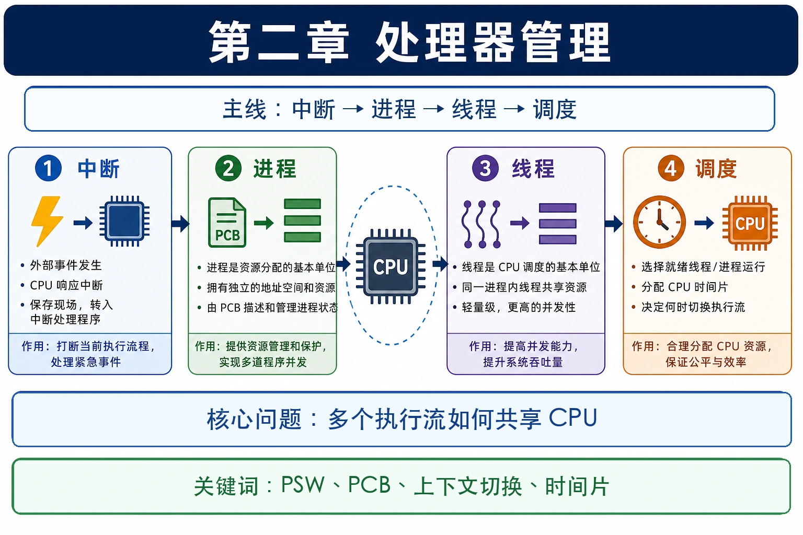
处理器管理是 OS 最核心的功能，围绕”如何让多个进程/线程合理共享 CPU”展开。
2.1 处理器
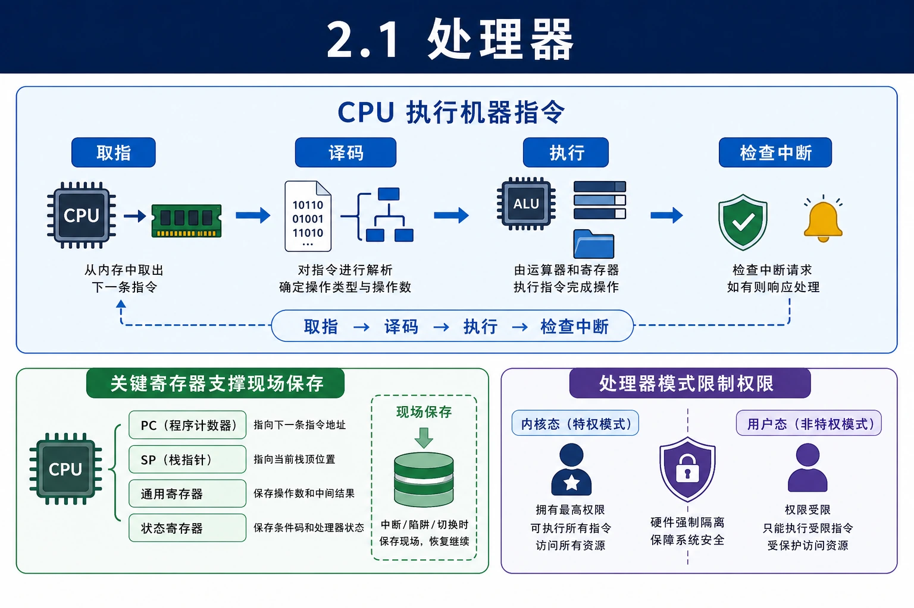
2.1.1 处理器与寄存器
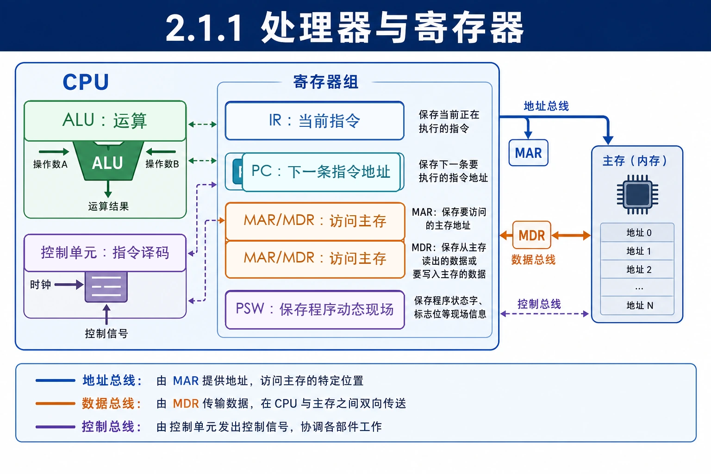
处理器（CPU）的部件构成（图 2-1）： - 算术逻辑单元（ALU）：负责运算，支持整数加法（基础）、乘除法、乘方开方、浮点运算 - 控制单元：核心是指令译码器（ID），负责解释指令的执行 - 指令寄存器（IR）：存放当前指令 - 程序计数器（PC）：指向下一条要执行的指令的主存地址 - 标志寄存器：汇总指令执行结果（条件码、零、负、溢出等） - 主存地址寄存器（MAR） 和 主存数据寄存器（MDR）：访问主存的桥梁 - 读：先把地址放 MAR，发读信号，主存数据进入 MDR - 写：先在 MDR 准备好数据，发写信号
关键标志位： - 中断位：判断有无中断发生及中断源 - 中断允许位：判断是否响应中断 - 中断屏蔽位：判断是否屏蔽中断 - 处理器模式位：判断当前处于内核态还是用户态 - 主存保护位：判断主存只读/可读写/不可访问
程序状态字（PSW, program status word）：记录程序执行的动态行为，包括程序计数器、指令寄存器、条件码、中断位、中断允许位、中断屏蔽位、处理器模式位、主存保护位等。是 OS 切换进程时必须保存/恢复的关键现场信息。
2.1.2 指令与处理器模式
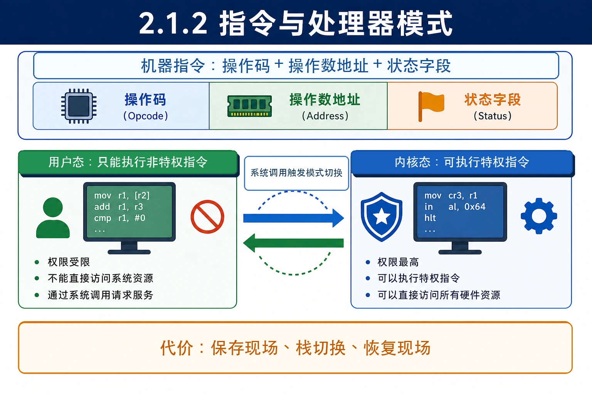
机器指令：CPU 执行的基本命令，由操作码字段、操作数地址字段、状态字段组成。
处理器模式（核心概念）： - 内核态（系统态/管态）：OS 例程运行，可执行所有指令，访问所有寄存器和主存 - 用户态（目态）：应用程序运行，只能执行非特权指令、访问受限主存
两类栈： - 用户栈：在用户进程空间中，保存子程序间互相调用的参数、返回值、返回点和局部变量 - 核心栈（系统栈/内核栈）：在 OS 内核空间中，保存中断现场、OS 函数调用的参数返回值 - 每个进程被创建时捆绑一个核心栈 - 嵌套调用代价大，核心栈一般有大小限制
模式切换的代价：从用户态到内核态需通过陷阱机制，进程要经历”保存现场→栈切换→执行→恢复现场”，开销可观。
对应学校 ch2
2.2 中断
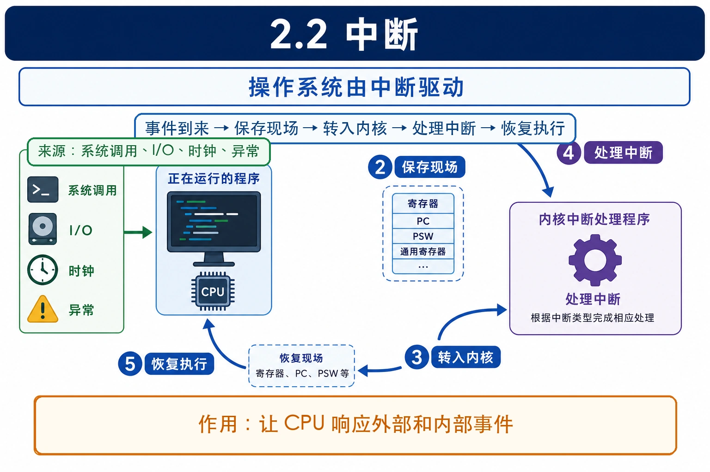
2.2.1 中断的概念
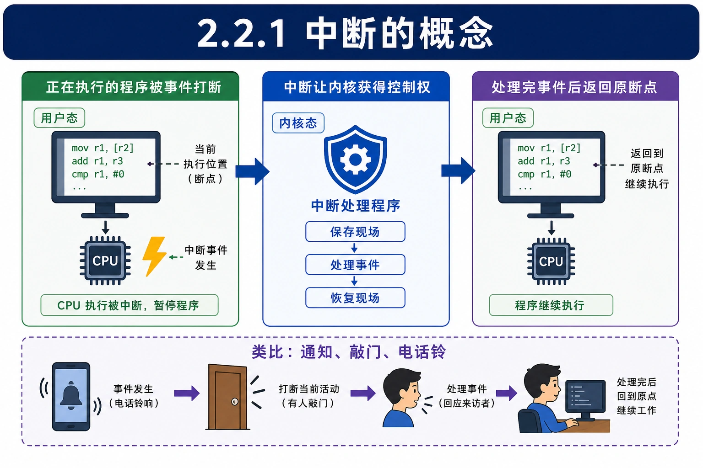
原书定义：中断机制是现代计算机系统的重要组成部分。每当应用程序执行系统调用、要求获得 OS 服务、I/O 设备报告传输情况、或产生形形色色的内部和外部事件时，都要通过中断机制产生中断信号并启动 OS 内核工作。可以说操作系统是由中断驱动的。
类比：日常的”通知/敲门/电话铃”——你正在做事，被打断去处理新事件，处理完回来继续。
2.2.2 中断源
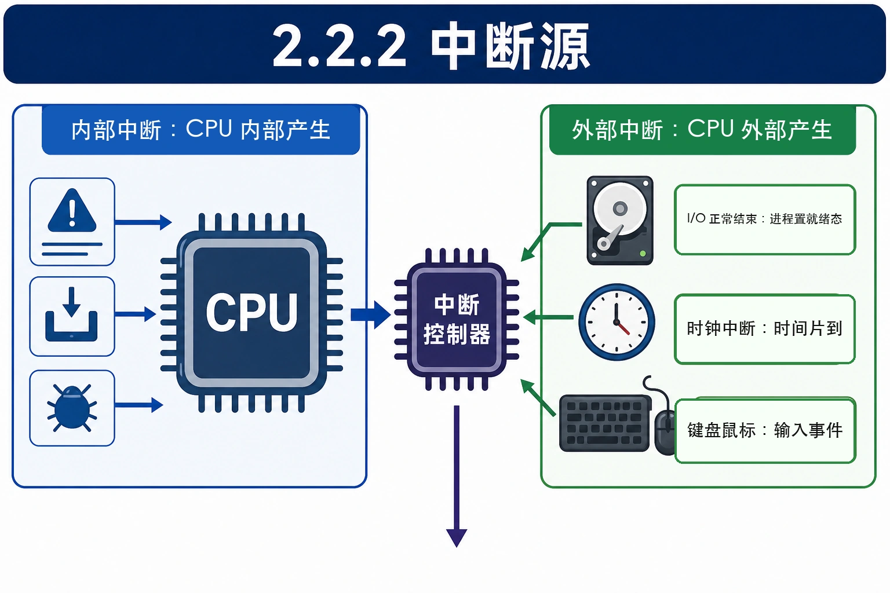
中断分内部中断（CPU 内部产生）和外部中断（CPU 外部产生）。
I/O 中断的处理原则： - I/O 操作正常结束：本进程置就绪态，让等待的下一进程占用设备并启动数据传输 - I/O 操作发生故障：向设备发送命令索取状态字，分析故障原因，复执或人工干预 - I/O 操作发生异常：分析情况，采取相应措施并向操作员报告（如换纸/装纸等）
外部中断事件： - 时钟中断：计时 - 间隔时钟中断：时间片到，被中断进程让出 CPU 进入就绪队列（分时系统/时间片轮转的硬件支撑） - 设备报告与结束中断：调整设备表 - 键盘/鼠标信号中断：根据信号反应 - 关机/重启动中断：写回文件、停止设备与 CPU
2.2.3 中断系统
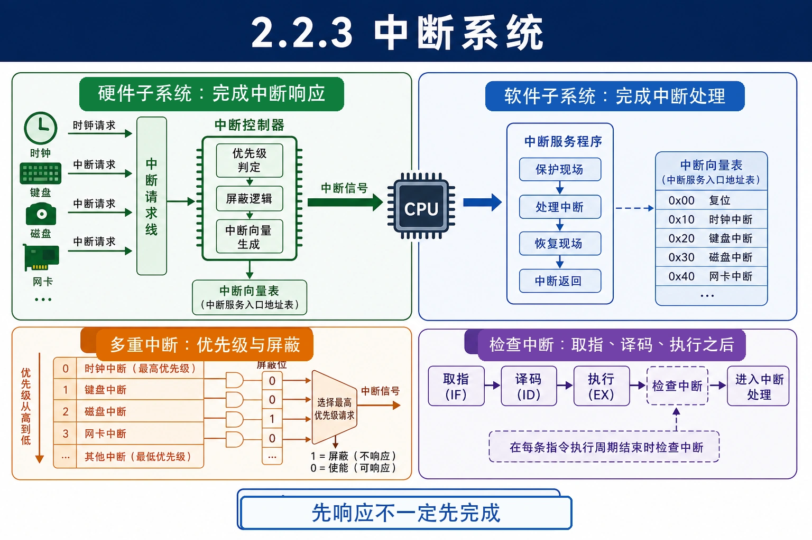
中断系统：响应和处理中断的系统，包括硬件子系统（完成中断响应）和软件子系统（完成中断处理）。是 OS 实现的基础支撑，也是软硬件协同设计的典型例子。
中断响应：在最简单的”取指、解码、执行”三步骤后，OS 加入”检查中断”的微操作。
多重中断（中断嵌套）：OS 在处理某中断过程中又发生新的中断，会保护被中断的处理程序现场，转向新中断处理程序。 - 一般不超过三重为宜 - 通过中断屏蔽机制可控制响应顺序：建立中断优先级队列，屏蔽与自己优先级相同和比自己低的，响应比自己高的 - 中断嵌套改变了中断处理的先后次序，先响应的中断反而被延后处理
对应学校 ch2
2.3 进程管理
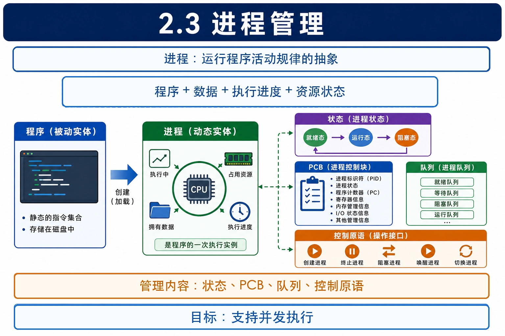
2.3.1 进程及其状态
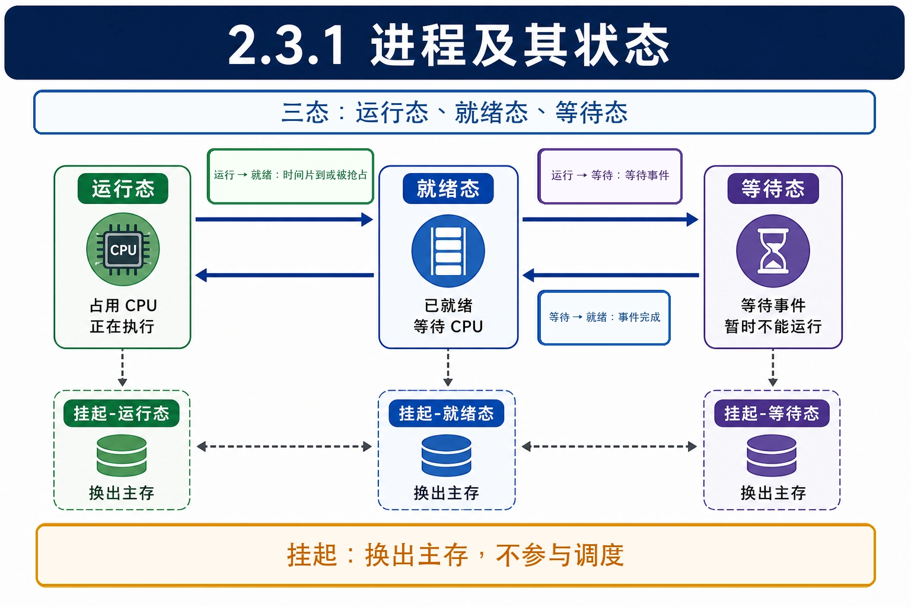
进程的概念（核心定义）： - 从原理角度看：进程是支持程序执行的一种系统机制，对处理器上运行程序的活动规律进行抽象 - 从实现角度看：进程是一种数据结构，用来准确刻画运行程序的状态和系统的动态变化状况
进程是多道程序系统出现后引入的新概念，刻画了运行程序之间的并发性。
类比：菜谱（程序）+ 厨师 + 食材 + 灶台 + 烹饪进度 = 一次做菜的过程（进程）。同一份菜谱可以同时让两个厨师做，就是两个进程。
三态模型基本进程状态： - 运行态（Running）：占用处理器执行 - 就绪态（Ready）：具备运行条件，等 CPU - 等待态（Blocked，又称阻塞态）：等某事件（如 I/O 完成）
五态模型（含挂起）：增加两个状态 - 挂起就绪态（ready suspend）：具备运行条件但被换出主存 - 挂起等待态（blocked suspend）：在等事件且被换出主存
为何引入挂起：终端用户请求、父进程请求、负荷调节、操作系统、对换需要等。
关键转换（图 2-6）： - 运行 → 就绪：被抢占或时间片到 - 运行 → 等待：出现等待事件 - 等待 → 就绪：等待事件结束 - 就绪 ⇄ 挂起就绪：挂起 / 解除挂起 - 等待 ⇄ 挂起等待：挂起 / 解除挂起 - 挂起等待 → 挂起就绪：等待事件结束（在外存中）
挂起进程不参与处理器调度，直到被对换进主存。
2.3.2 进程的数据描述
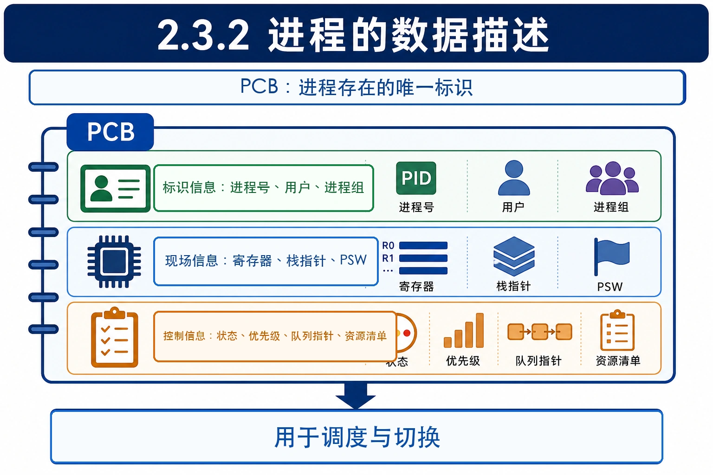
进程控制块（PCB, process control block）——进程存在的唯一标识，记录和刻画进程状态及环境信息。
PCB 三类信息（图 2-7）：
-
标识信息：唯一标识进程 - 外部标识符（用户用）：进程标识、进程组标识、用户进程名、用户组名 - 内部标识符（系统用）：进程号
-
现场信息：进程让出处理器后保存的现场 - 用户可见寄存器内容 - 控制/状态寄存器内容 - 用户/核心栈指针 - 程序状态字 PSW
-
控制信息：管理调度用 - 进程调度相关信息（状态、等待事件/原因、优先级、队列指针） - 进程组成信息（正文段指针、数据段指针） - 进程族系信息（父/子/兄弟指针） - 进程通信信息（消息队列指针、所用的信号量和锁） - 进程段/页表、外存映像地址 - 进程处理器使用信息 - 进程特权信息 - 进程资源清单
2.3.3 进程管理的实现
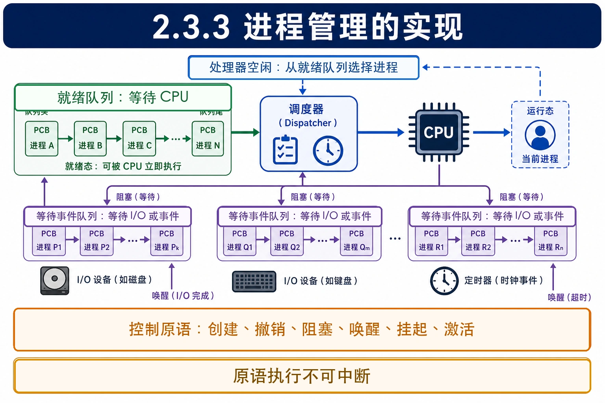
进程队列模型（图 2-9）： - 就绪队列（一个或多个，按优先级组织） - 多个等待事件队列（一个事件一个队列） - 处理器空闲时从就绪队列指派一个进程运行 - 出现等待事件 → 进入对应等待事件队列 - 等待事件结束 → 回到就绪队列 - 抢占/超时 → 强制进入就绪队列
进程控制原语（一组系统调用/不可中断操作）：进程创建、撤销、阻塞、唤醒、挂起、激活，以及进程特权修改。
2.3.4 进程切换与模式切换
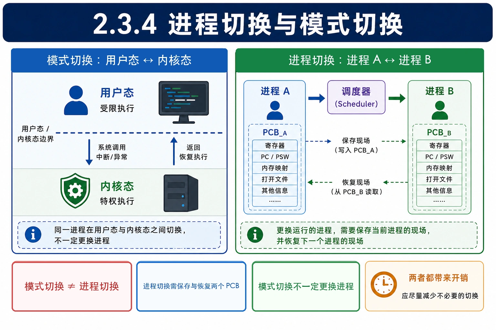
进程切换：从一个进程让出处理器，到另一个进程占用处理器。涉及两个 PCB 的操作（保存当前进程现场、恢复目标进程现场）。
关键区别：模式切换（用户态↔内核态）≠ 进程切换。模式切换不一定伴随进程切换。
2.3.5 操作系统的执行模式
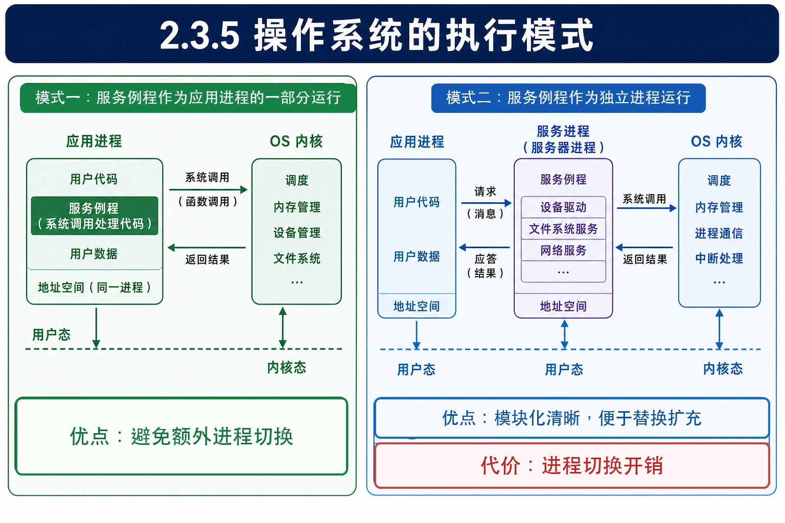
两种典型模式：
-
OS 服务例程作为应用进程的一部分运行（陷入内核态执行）： - 利用应用进程的核心栈作为系统调用的工作栈 - 服务例程仍运行于当前应用进程，作为扩展的一部分 - 优点：被中断的应用进程被恢复时无须牺牲两次进程切换为代价
-
OS 服务例程作为独立进程运行（服务器进程模式）： - OS 服务被组织为一组工作于用户态的系统进程 - 应用进程的系统调用通过内核消息传递实现，形成客户机/服务器工作方式 - 缺点：进程切换开销不可避免，性能下降 - 优点：模块化清晰，便于实现/替换/扩充（微内核思想的源头）
对应学校 ch2/ch3
2.4 多线程技术
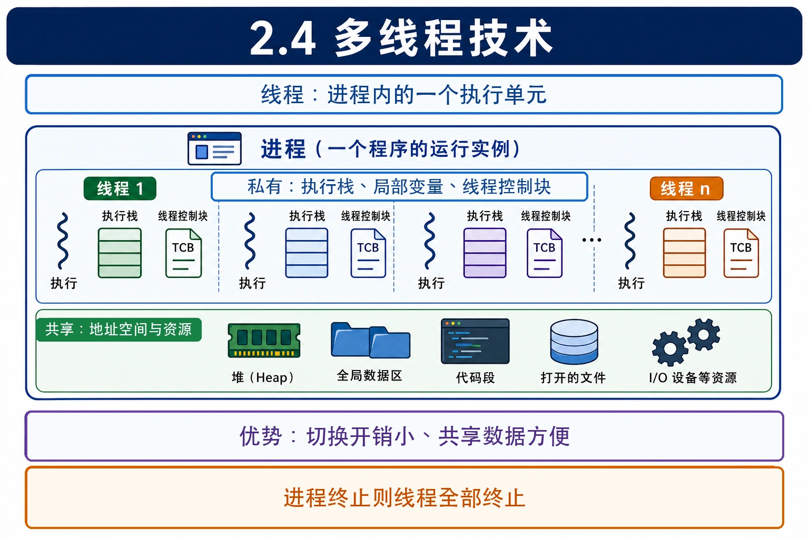
2.4.1 多线程环境概述
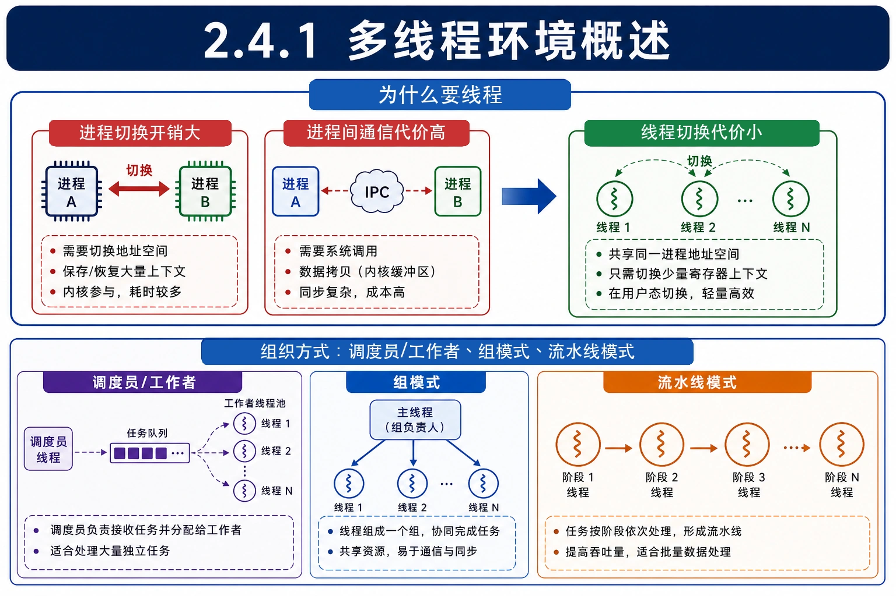
线程的提出：线程并非 OS 首先提出，并行程序设计和数据库管理系统都各自提出过。
为什么要线程： - 进程切换开销大（涉及地址空间切换、全部寄存器、TLB、缓存） - 同一进程内多个执行流需共享数据时，进程间通信代价高 - 线程 = 进程内的一个执行单元，共享地址空间，切换代价小
多线程进程的结构（图 2-10）： - 进程拥有：PCB、资源、存储空间（全局数据 + 程序代码） - 进程内若干线程：线程控制块 + 用户栈 + 核心栈
线程特征： - 有执行栈和存放局部变量的私有存储空间 - 可访问所属进程的主存和资源，与其他线程共享 - 有生命周期，状态转换与进程类似（运行/就绪/等待/终止） - 挂起对线程没有意义（挂起是进程级状态——进程被换出，所有线程都被换出） - 进程终止 → 该进程内所有线程都终止
线程组织方式： 1. 调度员/工作者模式：调度员线程接受请求并分配，其他线程做工 2. 组模式：所有线程平等接收和处理工作请求 3. 流水线模式：线程排成某次序，前一线程的输出作为后一线程的输入
2.4.2 内核级线程与用户级线程
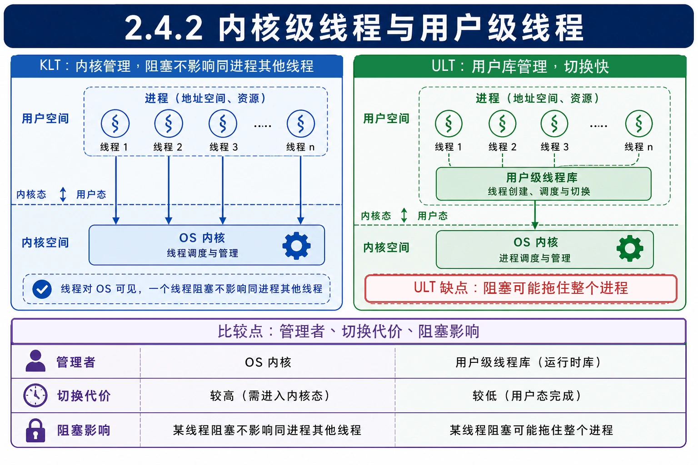
内核级线程（KLT）：由 OS 内核管理的线程 - 线程切换由内核完成 - 一线程阻塞不影响同进程其他线程 - 切换代价较用户级大
用户级线程（ULT）：由用户级线程库管理 - OS 不感知，仍以进程为调度单位 - 切换不进入内核，开销小 - 一线程阻塞会让所属进程整体阻塞（除非有 Jacketing 程序辅助）
2.4.3 多线程实现的混合策略（图 2-11）
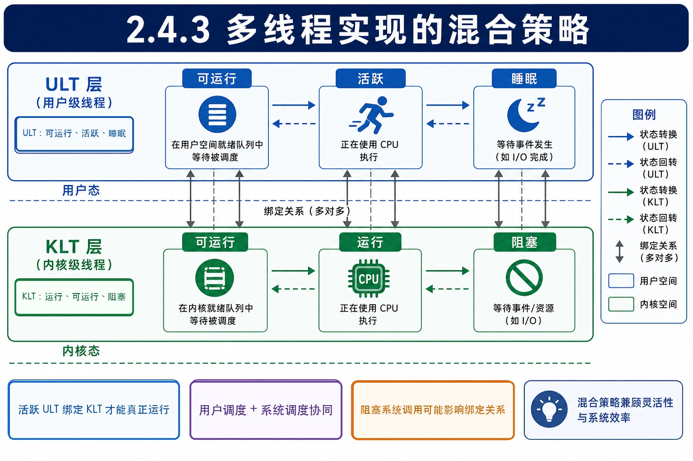
ULT 三态：可运行态、活跃态、睡眠态。 KLT 三态：运行态、可运行态、阻塞态。 ULT 的活跃态需绑定到一个 KLT 才真正运行。
- ULT 可运行 ↔ 活跃：用户调度（指派/剥夺）
- ULT 活跃 ↔ 睡眠：用户调度（封锁/活化）
- KLT 运行 ↔ 可运行：系统调度（指派/时间片到/剥夺）
- KLT 运行 → 阻塞：阻塞系统调用 → 唤醒 → 可运行
对应学校 ch2/ch3（线程部分）
2.5 处理器调度
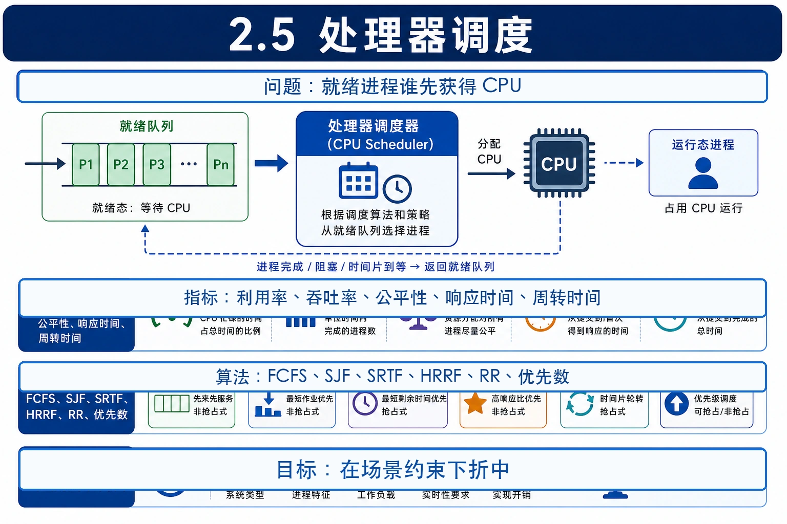
2.5.1 处理器调度的层次
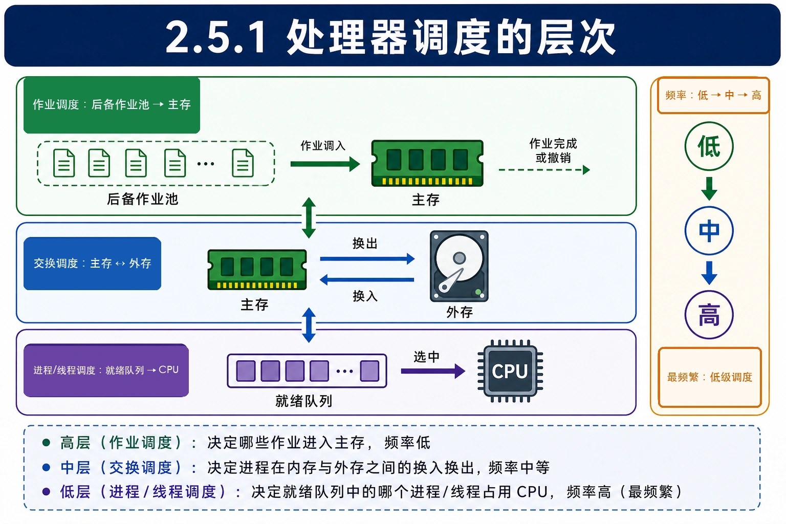
处理器调度分三个层次（自顶向下）： 1. 作业调度（高级调度/长程调度）：从后备作业池中选择作业进入主存（批处理系统主要用） 2. 交换调度（中程调度）：在主存与外存间换入换出进程 3. 进程/线程调度（低级调度/短程调度）：从就绪队列中选择一个分配 CPU（最频繁）
2.5.2 处理器调度算法
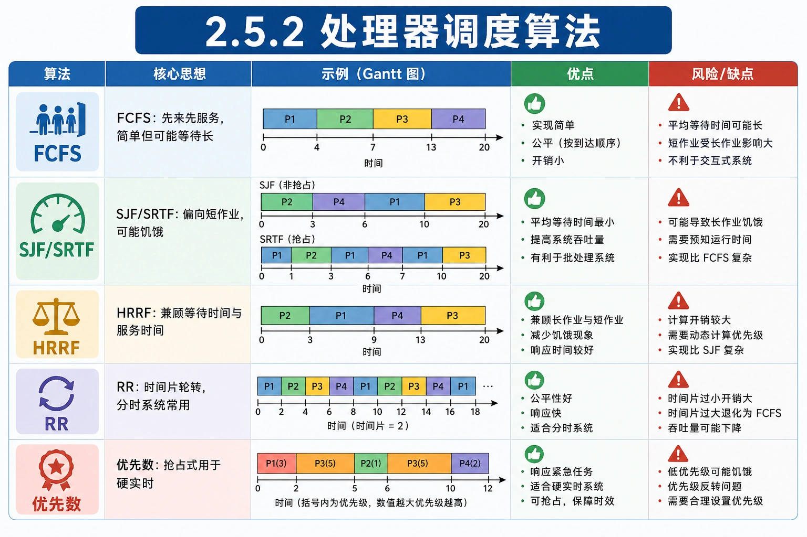
选择调度算法的性能指标： - 资源利用率：CPU 利用率 = CPU 有效工作时间 / CPU 总运行时间 - 吞吐率：单位时间内 CPU 处理作业的个数（批处理系统重要指标） - 公平性：每进程获得合理 CPU 份额，无”饥饿” - 响应时间：从交互式进程提交请求到获得响应的时间间隔（分时/实时系统重要指标） - 作业周转时间：批处理用户从向系统提交作业开始，到作业完成为止的时间间隔 - 周转时间 = 后备队列等待时间 + 就绪队列等待时间 + CPU 上执行时间 + 等待事件发生（如等 I/O）的时间
典型调度算法：
| 算法 | 全称 | 思想 | 优缺点 |
|---|---|---|---|
| FCFS | 先来先服务（first come first served） | 按进入系统时间顺序排队 | 简单；对计算密集进程过于优待，I/O 密集进程吞吐率低；不适合进程调度 |
| SJF | 最短作业优先（shortest job first） | 优先处理时间短的 | 提高吞吐率和平均周转时间；对长作业不公平甚至饥饿 |
| SRTF | 最短剩余时间优先（shortest remaining time first） | SJF 的抢占式版本 | 不公平特征更突出 |
| HRRF | 最高响应比优先（highest response ratio first） | 响应比 = 等待时间 / 计算时间 | 改善 SJF/SRTF 对长作业的不公平 |
| RR | 时间片轮转（round-robin） | 基于 FCFS + 时间片限制，每次只让进程运行一个时间片 | 分时系统主流，公平；时间片选择是关键 |
优先数调度：给每个进程或作业规定一个优先数。两种策略： - 抢占式优先数调度：高优先级出现立即占有 CPU。硬实时系统必需 - 非抢占式优先数调度：等 CPU 空闲后再选高优先级
优先数确定方式：紧迫程度、交互性、使用外设频度、进入系统时间长短和公平性等。
对应学校 ch3（线程调度）
第三章 存储管理
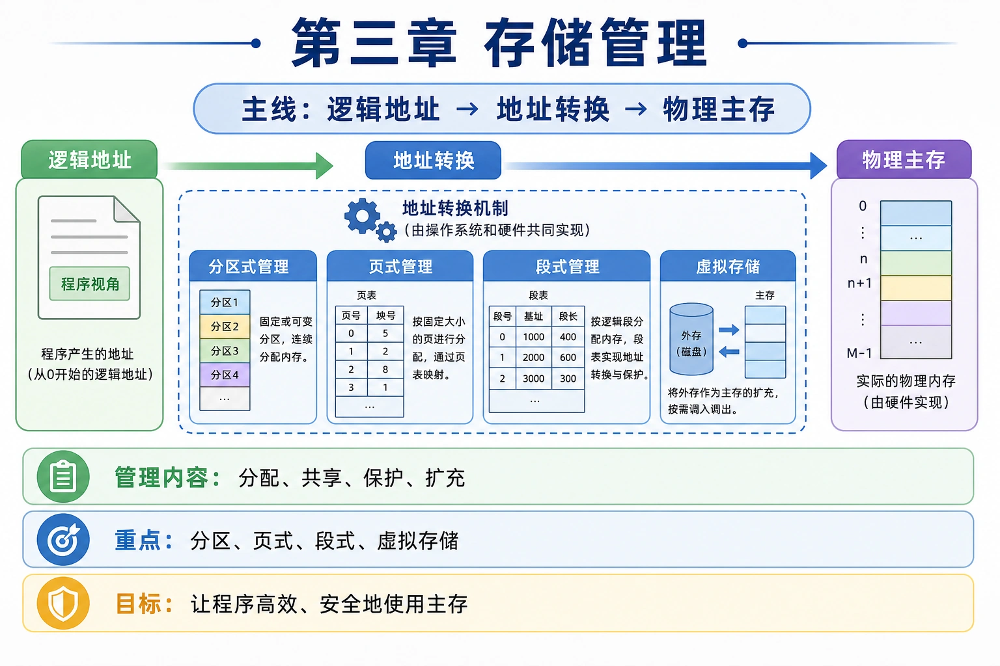
存储管理负责管理计算机系统的主存。程序及数据必须占用主存才能被 CPU 执行。但主存数据存取速度比 CPU 慢得多，因此高效的主存管理是 OS 设计的重要课题。
3.1 存储管理基础
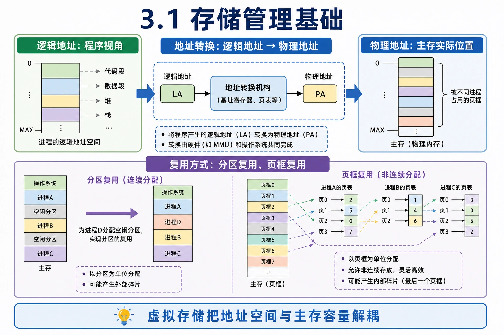
3.1.1 存储管理的主要模式
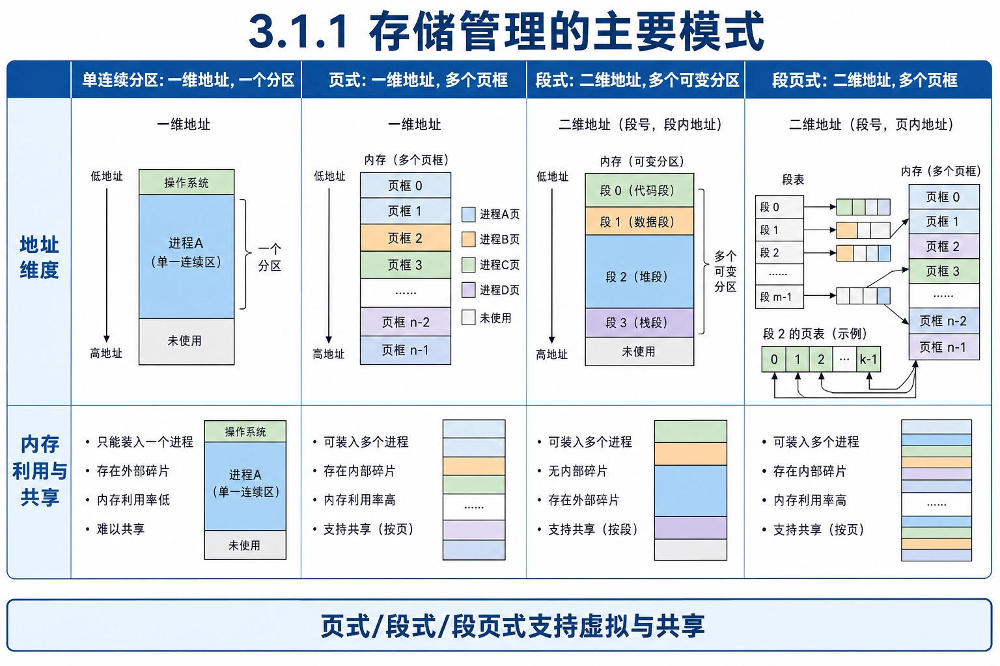
逻辑地址 vs 物理地址：
- 逻辑地址（相对地址）：目标代码程序存放于磁盘文件中，由于程序在主存中位置不可预知，地址空间总是相对某个基准（通常为 0）开始连续编号
- 一维逻辑地址：所有程序数据组织成一维
-
二维逻辑地址：用户程序设计成多个段，每段从 0 开始编址（段式程序设计的概念）
-
物理地址（绝对地址）：CPU 执行指令、处理数据时面向的实际主存地址。物理地址空间由存储器地址总线扫描得到，大小取决于实际安装的主存容量。
段式程序设计的好处：用户可用程序覆盖技术扩充主存使用量——程序设计时分主程序段、堆栈段、子程序段、数据段，执行时只调入主程序段、堆栈段和需要的子程序段。
主存的复用方式：
| 方式 | 含义 |
|---|---|
| 分区复用 | 主存划分为多个固定或可变尺寸的分区，一个程序/程序段占一个分区 |
| 页框复用 | 主存划分为多个固定大小的页框（也叫页架/主存物理块），一个程序/程序段根据页框大小自动划分成页面，占用多个页框 |
主存管理的 4 种模式（图 3-1）：
| 模式 | 逻辑地址 | 主存复用方式 |
|---|---|---|
| 单连续分区存储管理 | 一维 | 一个固定/可变分区 |
| 页式存储管理 | 一维 | 多个主存页框区 |
| 段式存储管理 | 二维 | 多个可变分区（每段一个连续分区） |
| 段页式存储管理 | 二维 | 多个主存页框区（每段被分成多个页框） |
重要规律： - 单连续分区 → 进程全部程序数据在一个不可分割区域 → 不能虚拟、不能共享、地址空间不可重合 - 页式/段式/段页式 → 主存区域可分割 → 可实现虚拟存储和共享
3.1.2 存储管理的功能
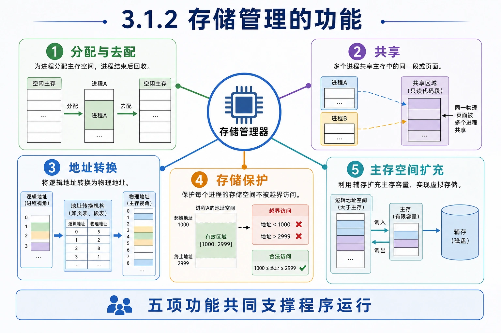
存储管理的主要功能： 1. 主存空间的分配与去配 2. 主存空间的共享 3. 地址转换（逻辑地址 → 物理地址） 4. 存储保护（防止越界访问、未授权访问） 5. 主存空间的扩充（虚存）
3.1.3 虚拟存储器概述
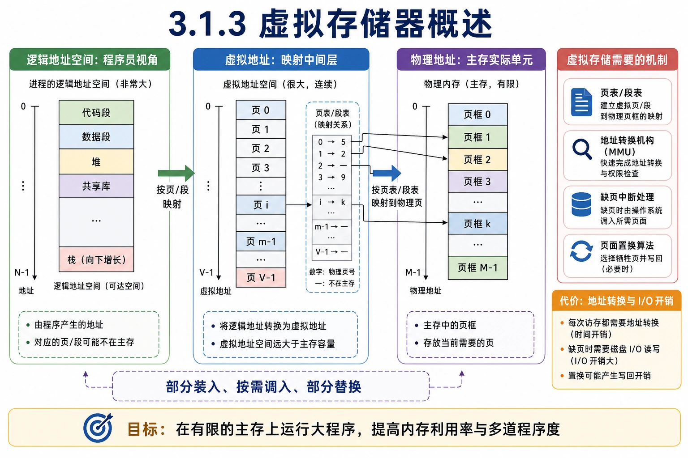
虚存的核心思想（图 3-2）： - 程序员看到的逻辑地址来自进程视角的逻辑主存单元 - 物理地址来自处理器视角的物理主存单元 - 虚拟地址是把逻辑地址映射到物理地址的中间层 - 关键：把程序编程的逻辑地址与主存物理地址分隔开 - 用户无须知道主存工作方式，只在逻辑地址空间中编程 - 系统负责主存分配和地址映射
虚存容量：限于计算机地址结构和磁盘容量。32 位地址线计算机程序可寻址 4GB，OS 虚拟主存空间就可扩充至 4GB 逻辑主存。
实现虚存必须解决： - 主存与磁盘统一管理 - 逻辑地址与物理地址转换 - 部分装入和部分替换
虚存代价：地址转换硬件开销、地址转换数据结构的存储开销、执行地址转换指令的时间开销、主存与外存交换页/段的 I/O 开销。
3.1.4 存储管理的硬件支撑
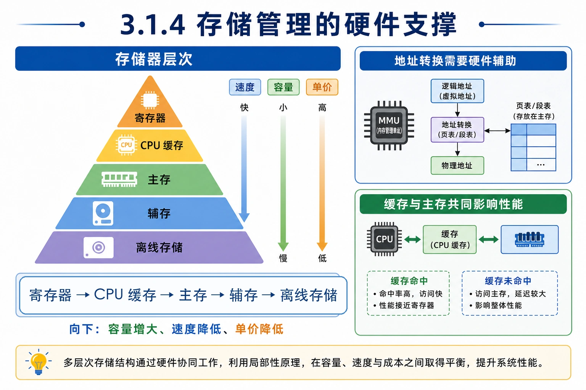
存储器层次（自顶向下，速度递减/容量递增/单价递减）：寄存器 → CPU 缓存（L1/L2/L3）→ 主存 → 辅存（磁盘/SSD）→ 离线存储。
对应学校 ch4（前段）
3.2 单连续分区存储管理
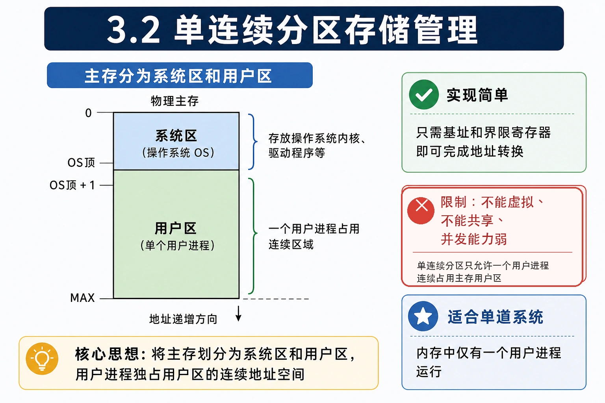
3.2.1 单用户连续分区与固定分区
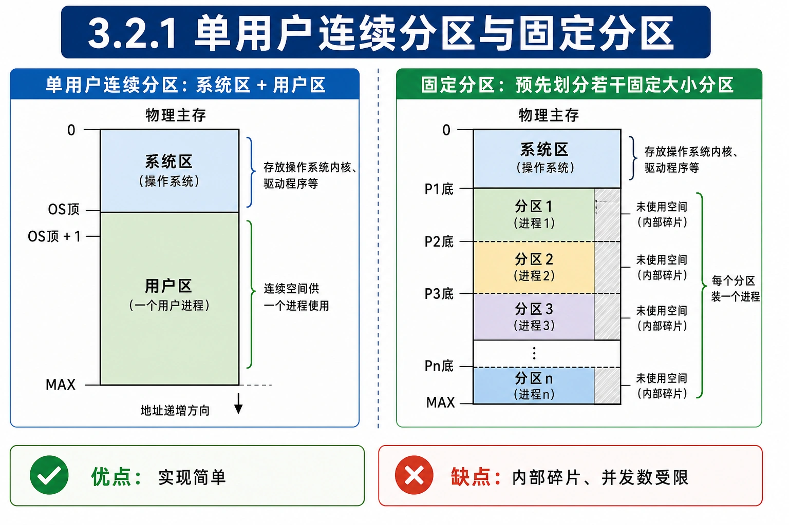
单用户连续分区：单道系统的最简单实现——主存分为系统区（OS）和用户区（一个用户进程）。
固定分区：主存预先划分若干固定大小分区，每个分区装一个进程。 - 优点：实现简单 - 缺点：内部碎片严重（分区大小固定，进程小于分区时浪费）；分区数固定，作业并发数受限
3.2.2 可变分区存储管理
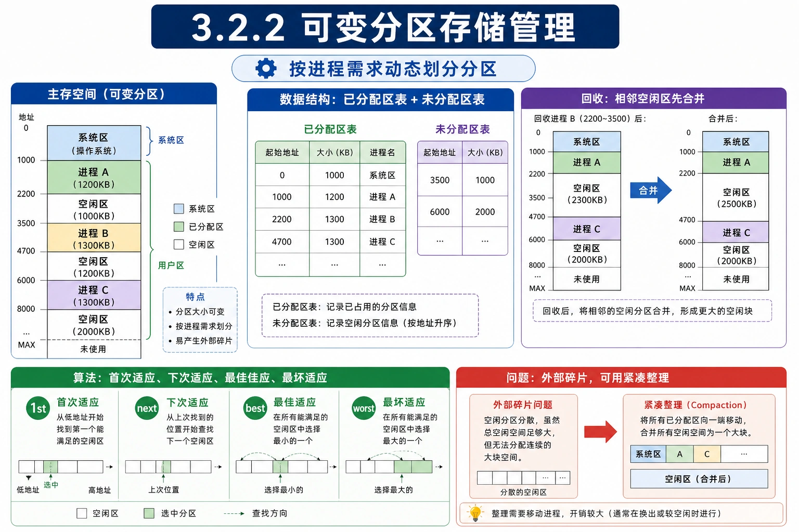
可变分区（variable partition）：按进程主存需求大小划分分区，划分时间、大小、位置都是动态的。
主存空间的分配和去配： - 数据结构：已分配区表 + 未分配区表 - 装入新进程时，从未分配区表找出空闲区，分割成两部分（一部分装作业、剩余仍为空闲区） - 进程撤离时，撤销已分配区表中相应栏目，把回收分区登记到未分配区表 - 若有相邻空闲区，则先合并后登记
可变分区的回收（图 3-8）：作业 X 撤离时分 4 种情况 1. 邻接两边都有作业（A 和 B）：直接登记为新空闲区 2. 邻接一边有作业（A 或 B）：与另一边空闲区合并 3. 邻接两边都是空闲区：三块合并 4. 邻接两边都不是空闲/作业：单独成空闲区
经典分配算法： - 首次适应（first fit）：从表头查找第一个能装下的空闲区 - 下次适应（next fit）：从上次找到位置之后开始 - 最佳适应（best fit）：找最小且能装下的空闲区（产生小碎片） - 最坏适应（worst fit）：找最大空闲区（保留大块）
外部碎片：可变分区运行一段时间后，主存中分布大量小空闲区无法容纳新作业。可通过紧凑/移动技术整理。
对应学校 ch4
3.3 页式存储管理
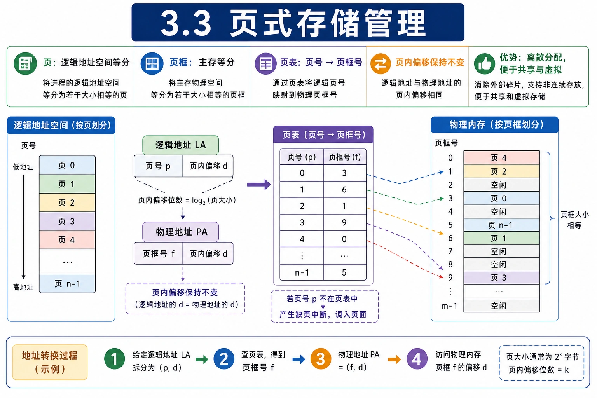
3.3.1 页式存储管理的基本原理
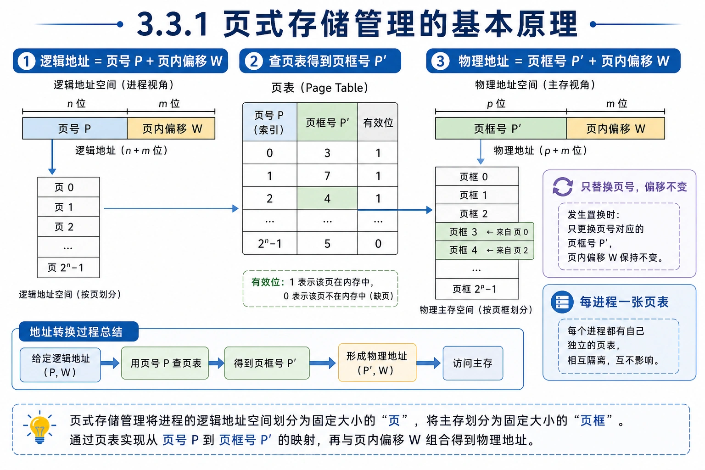
核心概念： - 页（page）：进程逻辑地址空间被等分成的小块 - 页框（frame，主存物理块）：主存被等分成的同样大小的小块 - 页表（page table）：记录页号 → 页框号的映射，每进程一张 - 逻辑地址结构：高位是页号 P，低位是页内偏移 W
地址转换：把页号换为页框号即可（页内偏移不变）。 - 逻辑地址 (P, W) → 查页表得页框号 P’ → 物理地址 = (P’, W)
3.3.2 页式存储管理的实现
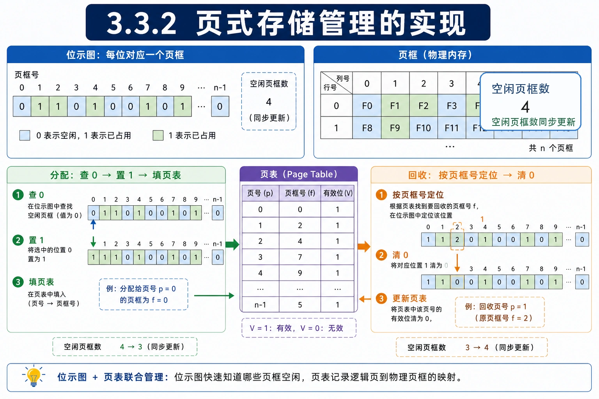
页式存储管理的主存分配： - 用位示图记录页框分配情况：每位对应一个页框，0/1 表示空闲/已占用 - 还需另设字段记录当前空闲页框数
页框分配算法： - 检查空闲页框数是否满足需求 - 若不能 → 进程等待 - 若能 → 查找位示图中为 0 的位，置为 1，从空闲页框数中减去本次占用块数，按位置计算对应页框号，填入进程页表
进程结束归还主存时：根据归还页框号计算位示图位置，清 0，把块数加回空闲页框数。
主存共享：页式管理把主存分成多个页框，一旦程序能被切割成若干碎片（无论逻辑碎片还是物理碎片），共享就成为可能。多进程可共享同一段代码或数据页。
3.3.3 页式虚拟存储管理
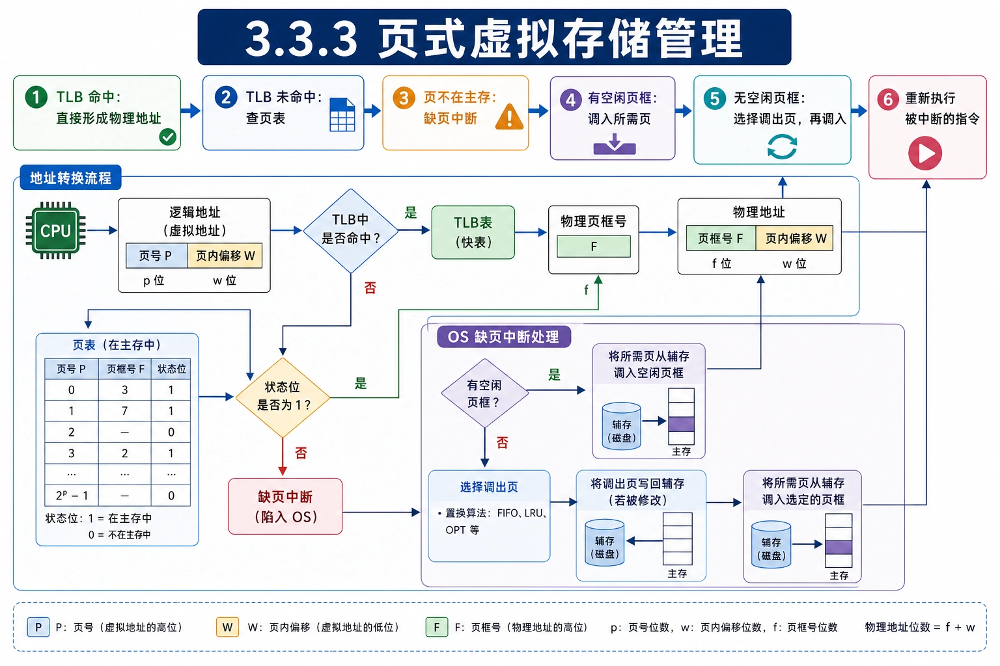
核心思想：进程装入时不需全部页都装入主存，只装当前需要的页；执行过程中需要新页时再装入；主存满时选择某些页换出到外存。
关键机制： - 快表（TLB）：硬件辅助的页表缓存，加速地址转换 - 缺页中断：访问的页不在主存时触发，由 OS 处理 - 页表项的标志位： - 驻留位：是否在主存 - 修改位：是否被修改过（决定换出时是否需要写回） - 引用位：最近是否被访问过（用于页面置换） - 可移动标志：记录该页是否可移动，正在与外设交换的页是不能被移动的
地址转换流程（图 3-14）： 1. 按逻辑地址查快表 2. 若快表中有登记 → 直接形成绝对地址 3. 若快表无登记 → 查页表 4. 若页在主存 → 形成绝对地址，并把该页登记入快表 5. 若页不在主存 → 发缺页中断，让 OS 介入 6. OS 保护现场，判断主存是否有空闲块 7. 若有 → 调入所需页，调整页表/快表/主存分配表，重新执行被中断的指令（注意：该指令是在执行指令的过程中处理地址时发生中断，所以指令要回退执行） 8. 若主存无空闲块 → 选择调出页（被修改过的需写回外存），再调入
3.3.4 页面调度
关键概念：缺页率影响系统性能。糟糕的访问模式会大幅增加缺页中断次数。
关键例题：缺页次数比较
二维数组 int A[128][128] 假设每行恰好放在一页中：
// 程序 1：列优先遍历（跨页跳跃）
for (int j = 0; j < 128; j++)
for (int i = 0; i < 128; i++)
A[i][j] = 0;
// 每执行一次 A[i][j] = 0 都可能产生一次缺页
// 共产生 (128 × 128 - 1) 次缺页中断
// 程序 2：行优先遍历（沿连续地址）
for (int i = 0; i < 128; i++)
for (int j = 0; j < 128; j++)
A[i][j] = 0;
// 仅产生 (128 - 1) 次缺页中断
结论：访问模式与页布局对齐，可大幅减少缺页中断。这是程序员需要了解 OS 的重要原因——不同写法的性能可能差几个数量级。
页面置换算法：
| 算法 | 全称 | 思想 | 评价 |
|---|---|---|---|
| OPT | 最佳置换（optimal replacement） | 淘汰以后不会再访问的页；若都会访问，淘汰距现在最长时间后才访问的 | 理论最优，无法实现，仅可模拟比较 |
| FIFO | 先进先出（first in first out） | 淘汰最先进入主存的页（驻留时间最长） | 模拟程序顺序性，对循环结构差；实现简单 |
| LRU | 最近最少使用（least recently used） | 淘汰最近一段时间较久未使用的页 | 兼顾顺序性和循环性；实现代价大（需为每个驻留页建动态优先队列） |
| LFU | 最不常用（least frequently used） | 淘汰最近一段时间内访问次数较少的页 | 对 OPT 的模拟性比 LRU 算法更好；基于时间间隔中断为每页设计数 |
LRU 实现要点： - 为每个主存驻留页建立引用标志位（硬件辅助） - 设置时间间隔中断：中断发生时所有驻留页引用标志位置 0；地址转换时引用标志位置 1 - 淘汰页面时从引用标志位为 0 的页中随机淘汰一个 - 难点：时间间隔长度如何设置（太短全是 0、太长全是 1，都退化为随机调度）
3.3.5 反置页表
教材中此节为页式扩展，用于解决大地址空间页表过大的问题（每进程一张大页表），通过全局反置页表（按页框号索引）减少页表存储开销。
对应学校 ch4（页式管理是 ch4 重点）
3.4 段式存储管理
3.4.1 段式存储管理
段式程序设计的目的：满足用户编程的需求。 - 页式存储管理是从 0 开始编址的单一连续逻辑地址空间，虽可把程序划分成页面，但页面与源程序之间不存在逻辑关系，难以以模块为单位进行分配、共享和保护 - 段式程序设计可更好体现模块化程序设计思想：应用程序由若干程序段（模块）和数据段组成，如主程序段（M）、子程序段（X）、数据段（D）和工作区段（W），每段从 0 开始编址，有各自的名字和长度
段式逻辑地址：(段号, 段内位移)，是用户可见的二维结构。 - 与页式不同：页式中页号/页内位移划分对用户不可见，是连续地址空间根据页框大小自动划分 - 段式中段号/段内位移划分对用户可见：用户知道逻辑地址如何划分为段号和段内位移 - 设计程序时，段的最大长度由地址结构规定，最多段数也受限制
段表：进程装入主存时建立。表项记录：段号、段始址、段长度、段管理标志（可移动、可共享、读写保护）。
段式地址转换： 1. 段控制寄存器存放当前进程段表的起始地址和长度 2. 用段号与段表长度比较，超过则触发越界中断 3. 用段长与逻辑地址中段内位移比较，超过则触发越界中断 4. 否则段始址 + 段内位移 = 绝对地址
段的共享：段式管理可实现代码段与数据段共享——多进程段表中相应段指向主存相同地址即可。 - 段是逻辑概念，共享代码段与数据段没有段号必须相同的要求 - 段表表项需增设保护位记录共享段计数和只读/读写保护标志
3.4.2 段式虚拟存储管理
基本思想：进程装入时所有分段都存放在虚存中，进程运行时先把当前需要的一段或几段装入主存。在执行过程中通过段地址变换检查、缺段中断处理、段的换入换出等机制实现段级虚存。
与页式虚存的差异： - 段大小可变，调入/调出时可能产生外部碎片 - 段是逻辑单位，便于以模块为单位实现共享和保护 - 缺段中断处理需要分配可变大小的主存空间
对应学校 ch4（段式管理）
已覆盖内容小结
教材章节范围
- 第一章 计算机操作系统概述（书 p1-36）：完整覆盖
- 第二章 处理器管理（书 p37-81）：完整覆盖
- 第三章 存储管理（书 p82-118）：覆盖前 3.1-3.4 段式管理基础
关键概念清单（按重要度排序）
- 进程及其状态（三态/五态模型）+ PCB 结构
- 中断机制（OS 由中断驱动）
- 用户态/内核态 + 系统调用 vs 函数调用
- 多道程序 CPU 利用率计算（书 p19 例题 35% → 63%）
- 处理器调度算法（FCFS/SJF/SRTF/HRRF/RR/优先数）
- 多线程：内核级 vs 用户级 + 混合策略
- 虚拟存储器：虚地址/物理地址映射
- 页式存储管理 + 缺页中断 + 页面置换（OPT/FIFO/LRU/LFU）
- 段式存储管理 + 段表 + 共享与保护
- 二维数组遍历缺页例题（书 p104 列优先 vs 行优先）
关键例题保留
- 图 1-8：两道程序并行 CPU 利用率从 35% 提升到 63%
- 图 3-14：页式虚存地址转换流程图（缺页中断处理）
- 书 p104：二维数组列优先 vs 行优先的缺页次数差异（128² - 1 vs 127）
与学校 PPT 的对应关系
教材的章节组织和学校 PPT 的 ch1-5 大致对应： - 教材 Ch1 概述 ≈ 学校 ch1 - 教材 Ch2 处理器管理 ≈ 学校 ch2（处理器/中断）+ ch3（进程/线程/调度） - 教材 Ch3 存储管理 ≈ 学校 ch4
待后续 Part2 / Part3 覆盖
- 第三章 存储管理 后段（段页式存储管理、3.4.3）
- 第四章 设备管理（书 p119 起）
- 第五章 文件管理（书 p158 起）
- 第六章 并发程序设计（书 p196 起）—— PV 操作、管程、生产者-消费者
- 第六章 死锁（书 p231 起）
- 第七章 网络环境下的操作系统（书 p247 起）
图清理报告（2026-05-15）
范围：教材前 120 页扫描图（images/img-001 ~ img-120）。
清理前：120 张 / 125M（整 images 目录）。 清理后：保留 33 张 / 删除 87 张；images 目录 125M → 66M。
保留页号清单（33 张，含图表 / 章首 / 习题表）：
- 封面/目录：p1, p8, p9, p10
- 第一章关键图：p13（章首）, p15（图1-2用户视图、图1-3硬件组成）, p21, p23, p27, p30, p33
- 第二章关键图：p38, p47（章首）, p49（图2-1处理器部件）, p52, p55, p58, p64, p66, p70, p73, p74, p91（习题二第16-19题表格）
- 第三章关键图：p83（章首）, p87, p93, p95（图3-1存储模式）, p98, p99（图3-3存储层次）, p102, p104, p107, p108
删除规则：纯文字段落（已完整融入 part1 的”## 第 N 页”骨架与对应章节笔记）、过渡段、习题题面（题目已整理在 part1 章末习题清单）、微视频二维码页。
抽样验证页（确认可删的代表性纯文字页）：p25, p35, p45, p60, p76, p80, p85, p115, p119（覆盖 1.3 多媒体/VR、1.5 实时操作系统、习题一题面、2.2 中断响应、2.4 多线程引入、2.5 优先数调度、3.4 段式管理、3.5 页面调度算法）。
约束：不修改 index.md（保持 363 行”## 第 N 页”骨架）；保留图均可通过 part1 笔记的页号锚点回查。